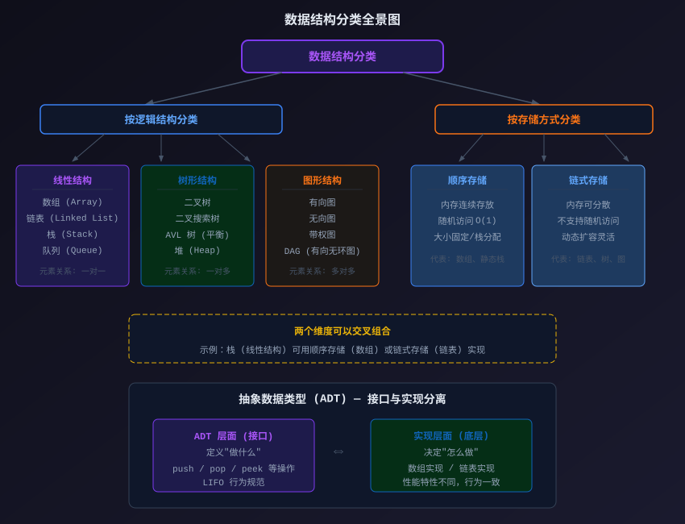

データ構造の基本概念
各種データ構造を本格的に学ぶ前に、データ構造の分類方法、抽象データ型の概念を理解し、C言語でデータ構造と密接に関連する中核知識を復習しておく必要があります。
データ構造の分類
データ構造は「論理構造」と「格納方式」の2つの次元で分類できます。この2つの分類方法を理解することで、具体的な問題に直面したときに、どの種類のデータ構造を選ぶべきかを素早く判断できるようになります。

上の図はデータ構造の完全な分類体系を示しています。以下で順に説明します。
論理構造による分類
論理構造は、データ要素間の抽象的な関係を記述するものであり、データがメモリ内で実際にどのように格納されるかには関与しません。
| 種類 | 要素の関係 | 代表的な例 | 適用場面 |
|---|---|---|---|
| 線形構造 | 一対一の前後関係 | 配列、連結リスト、スタック、キュー | データに明確な順序がある場合。例：TODOリスト、閲覧履歴 |
| 木構造 | 一対多の階層関係 | 二分木、BST、ヒープ | データに階層的な所属がある場合。例：ファイルシステムのディレクトリ、組織構成 |
| グラフ構造 | 多対多の網状関係 | 有向グラフ、無向グラフ、重み付きグラフ | データ間の関係が複雑な場合。例：ソーシャルネットワーク、地図ナビゲーション |
格納方式による分類
格納方式は、データがメモリ内で実際にどのように構成されるかを記述します。
| 種類 | 特徴 | 代表的な例 | トレードオフ |
|---|---|---|---|
| 順次格納 | 要素が連続したメモリ空間に順番に格納される | 配列、配列で実装されたスタック/キュー | アクセスは高速（O(1)）ですが、挿入・削除は遅く、サイズは固定です。 |
| チェーン格納 | 要素を分散して格納でき、ポインタで接続する | 連結リスト、木、グラフ（隣接リスト） | 挿入・削除は高速ですが、ランダムアクセスはできず、ポインタの追加オーバーヘッドがあります。 |
| 索引格納 | 追加の索引テーブルを作成してデータを特定する | ハッシュテーブル（ハッシュ関数による索引） | 検索は非常に高速ですが、索引構造を格納するための追加スペースが必要です。 |
同じ論理構造でも、さまざまな格納方式で実装できます。例えば、スタック（論理的には線形構造）は配列（順次格納）でも連結リスト（チェーン格納）でも実装できます。どちらの実装方式を選ぶかは、特定のアプリケーションシナリオにおけるアクセス速度、挿入・削除の効率、メモリ使用量の要件によって異なります。
抽象データ型（ADT）
抽象データ型（Abstract Data Type、略称 ADT）はデータ構造学習における中核的な概念です。
それは、一組のデータと、そのデータに対して定義された一組の操作の抽象的な記述であり、「何をするか」だけを重視し、「どのようにするか」は重視しません。
「スタック」を例に ADT を理解しましょう。
| ADT レベル（何をするか） | 実装レベル（どのようにするか） |
|---|---|
| 操作を定義：push（プッシュ）、pop（ポップ）、peek（スタックの先頭を参照） | 配列で実装：配列 + top ポインタを維持する |
| 動作を定義：後入れ先出し（LIFO） | 連結リストで実装：リストの先頭をスタックの先頭とする |
| 制約を規定：一端からのみ操作できる | どちらの実装も ADT の定義を満たしますが、性能特性は異なります。 |
この「インターフェースと実装の分離」という考え方は、現代のソフトウェア工学におけるモジュール設計の基盤です。
スタックを使用するときは、push、pop などの操作の使い方を知っていれば十分であり、内部で配列を使っているか連結リストを使っているかを気にする必要はありません。これこそが ADT の価値です。
C言語の基礎知識の復習
データ構造を学ぶ前に、以下の3つのC言語の中核知識をしっかり習得しておく必要があります。これらは本チュートリアルのほぼ全章にわたって登場します。
ポインタ（Pointer）
ポインタはC言語で最も重要かつ柔軟な機能の1つです。ポインタは別の変数のメモリアドレスを格納し、ポインタを介して対象の変数に間接的にアクセス・操作できます。
例
int main() {
int num = 42; /* 通常の整数型変数 */
int *ptr = # /* ptr は int へのポインタで、num のアドレスを格納 */
printf("num の値: %d\n", num); /* 出力: 42 */
printf("num のアドレス: %p\n", &num); /* 出力: 0x16d2f2f38（サンプルアドレス） */
printf("ptr が格納するアドレス: %p\n", ptr); /* 出力: 同上 */
printf("*ptr をデリファレンスした値: %d\n", *ptr); /* 出力: 42。* はデリファレンス演算子 */
*ptr = 100; /* ポインタを介して num の値を変更 */
printf("変更後の num = %d\n", num); /* 出力: 100 */
return 0;
}
データ構造におけるポインタの中核的な用途：
| 用途 | 例 |
|---|---|
| 動的ノード間の接続を構築する | 連結リストのノード内のnextポインタ、木ノード内のleft/rightポインタ |
| データへの間接アクセスと変更 | ポインタ引数を介して関数に外部変数の値を変更させる |
| 動的メモリ管理 | malloc割り当てたメモリの先頭アドレスを返すため、ポインタで受け取る必要がある |
| 大量のデータコピーを避ける | 大きな構造体を関数に渡す場合、値渡しよりもポインタ渡しの方が効率的です |
初学者が最も混同しやすいのは
*と&* の使い方です。宣言時にはint *p* は p がポインタ型であることを示します。使用時には*p* はデリファレンス（値の取得）を示します。&x& はアドレス取得を示します。これらは完全に異なる演算子であり、この違いを理解することがポインタを使いこなす前提です。
構造体（struct）
構造体は、複数の異なる型のデータを1つのカスタム型にまとめることを可能にし、連結リストのノードや木ノードなどの複合データ構造を構築するための基本単位です。
例
#include <string.h> /* strcpy 関数が含まれるヘッダファイル */
/* 連結リストのノード構造体を定義 */
struct Node {
int data; /* データ領域：実際のデータを格納 */
struct Node* next; /* ポインタ領域：次のノードを指す */
};
/* 学生情報の構造体を定義 */
struct Student {
int id; /* 学籍番号 */
char name[50]; /* 氏名、文字配列 */
float score; /* 成績 */
};
int main() {
/* ノードを作成 */
struct Node node1;
node1.data = 10;
node1.next = NULL; /* NULL は現在のノードに後続ノードがないことを示す */
printf("node1.data = %d\n", node1.data); /* 出力: 10 */
/* 学生レコードを作成 */
struct Student stu;
stu.id = 1001;
strcpy(stu.name, "サンプル"); /* strcpy：文字列を文字配列にコピーする */
stu.score = 95.5;
printf("学籍番号: %d, 氏名: %s, 成績: %.1f\n",
stu.id, stu.name, stu.score);
/* 出力: 学籍番号: 1001, 氏名: サンプル, 成績: 95.5 */
return 0;
}
構造体はポインタと組み合わせることで、柔軟な動的データ構造を実現できます。例えば、連結リストノードの自己参照構造（struct Node* next同型の次のノードを指す）は、まさに連結リストの実装基盤です。
動的メモリ割り当て
動的メモリ割り当てにより、プログラムは実行時に必要に応じてヒープメモリを確保・解放できます。これは、サイズが可変なデータ構造（連結リストや木など）を構築するための鍵となります。
C言語には4つの主要な関数が用意されています：
| 関数 | 機能 | 例 |
|---|---|---|
| malloc | 指定したバイト数のメモリを割り当てる。内容は初期化されない | int* p = malloc(10 * sizeof(int)); |
| calloc | メモリを割り当て、ゼロに初期化する | int* p = calloc(10, sizeof(int)); |
| realloc | 割り当て済みメモリのサイズを変更する | p = realloc(p, 20 * sizeof(int)); |
| free | 割り当て済みメモリを解放し、システムに返却する | free(p); |
例
#include <stdlib.h> /* malloc, free が含まれるヘッダファイル */
int main() {
int n = 5;
/* malloc: ヒープ上に n 個の int 用の連続領域を割り当てる */
int* arr = (int*)malloc(n * sizeof(int));
/* 割り当てが成功したか確認する。malloc は失敗時に NULL を返す */
if (arr == NULL) {
printf("メモリの割り当てに失敗しました！\n");
return 1; /* 異常終了 */
}
/* 動的に割り当てたメモリを通常の配列と同じように使う */
for (int i = 0; i < n; i++) {
arr[i] = (i + 1) * 10; /* 値を代入: 10, 20, 30, 40, 50 */
}
printf("動的配列の内容: ");
for (int i = 0; i < n; i++) {
printf("%d ", arr[i]);
}
printf("\n"); /* 出力: 動的配列の内容: 10 20 30 40 50 */
free(arr); /* メモリを解放し、メモリリークを防ぐ */
arr = NULL; /* 良い習慣：ポインタをNULLに設定し、ダングリングポインタを防ぐ */
return 0;
}
その他の拡張C言語は動的に割り当てたメモリを自動的に解放しない。毎回
malloc（またはcalloc）には必ず対応するfreeが必要であり、そうしないとメモリリークが発生する。実際のプロジェクトでは、メモリリークは徐々にシステムリソースを枯渇させ、最終的にプログラムのクラッシュを引き起こす。これはC言語の初心者が最も犯しやすいミスの一つである。